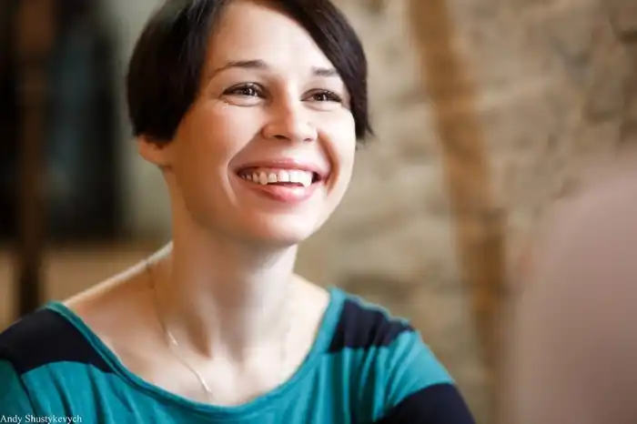
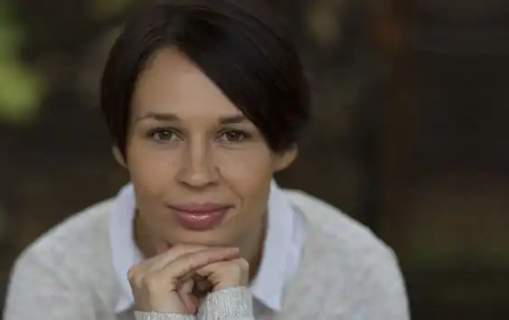

(17 листопада 1982, Івано-Франківськ) — українська письменниця, перекладачка й публіцистка.
Біографічні відомості
Донька письменника Юрія Андруховича. Дружина письменника Андрія Бондаря. Співредакторка часопису "Четвер". Має низку публікацій у періодиці. Стипендіатка програми Вілли Деціуша у Кракові (2004). Мешкає в Києві. 10 березня 2008 року народила доньку Варвару. Творчість Авторка прозових книжок "Літо Мілени" (2002), "Старі люди" (2003), "Жінки їхніх чоловіків" (2005), "Сьомга" (2007) та численних публікацій у пресі. У 2014 році випустила роман "Фелікс Австрія", що того ж року отримав відзнаку "Книга року BBC". У 2015 році стала лауреаткою премії імені Джозефа Конрада. У 2016 році Софія Андрухович спільно з Мар'яною Прохасько написали дитячу книку-картинку "Сузір'я Курки". Того ж року книжка увійшла до престижного каталогу в галузі міжнародної дитячої та юнацької літератури "Білі круки" ("WhiteRavens 2017"). Переклади Ґретковська Мануела. "Європейка". Переклад із польської. Дж. К. Роулінґ. "Гаррі Поттер і келих вогню". Переклад із англійської разом з Віктором Морозовим.